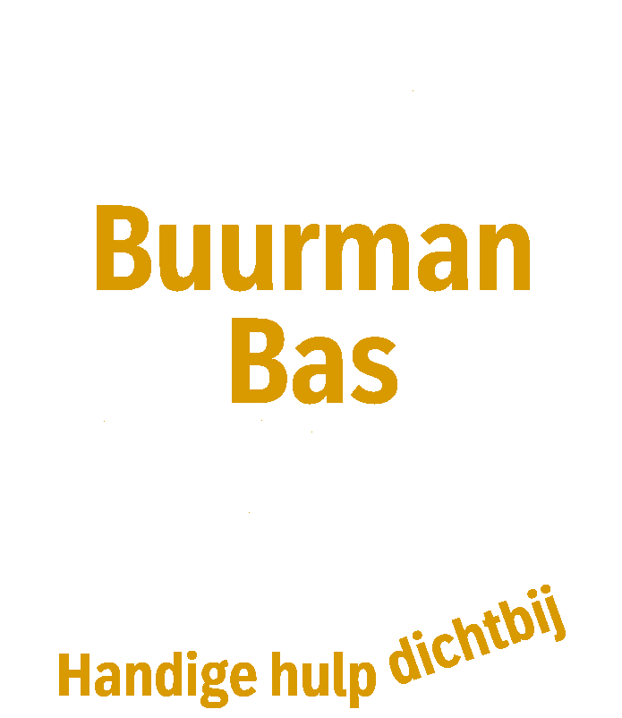

Hulp bij kleine klusjes, netjes en met aandacht uitgevoerd.
( Zuidhorn & Briltil )
WhatsApp mijNiet iedereen heeft een handige buur, familielid of vriend die even kan helpen. Ik bied praktische hulp voor mensen die het zelf niet kunnen or wat extra hulp kunnen gebruiken.
Ik vind het leuk om iets voor een ander te betekenen en werk graag met mijn handen. Geen vakbedrijf, maar gewoon iemand die graag helpt en ervaring heeft met uiteenlopende klusjes.
Mensen om mij heen omschrijven mij als handig, zorgvuldig en precies. Ik neem de tijd en ben pas tevreden als u dat ook bent.
Ophangen van lampen, planken, spiegels en accessoires.
Praktische oplossingen voor kleine problemen in en rond uw huis.
Voor de klusjes waarbij een extra paar handen welkom is.
Gratis en vrijblijvend kom ik bij u langs om de werkzaamheden, planning en kosten te bespreken.
Het klusje wordt netjes en zorgvuldig voorbereid en uitgevoerd.
Ik laat alles weer netjes achter en u betaald mijn onkosten enkel als u tevreden bent.
Ik werk niet op uurbasis. Wel vraag ik een vergoeding voor mijn onkosten en de eventeel aan te schaffen materialen. Vanzelfsprekend wordt dit vooraf met u besproken zodat u niet voor verrassingen komt te staan.
Stuur gerust een korte beschrijving (evt. met foto) via WhatsApp. Dan kijken we samen wat mogelijk is.
WhatsApp mij